때는 2020년 2월12일, 8년지기 친구2명과 첫 해외여행을 갔다. 2박 3일 여행을 하면서 느낀것은 싼 가격에
여행 참 잘 다녀왔다는 생각이 들었다.
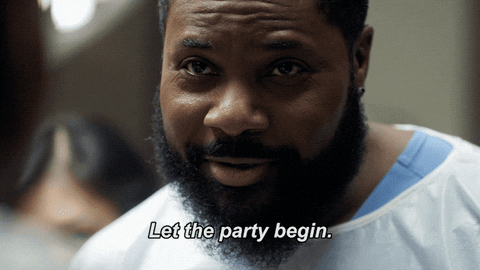
해외여행 처음간 여행 초보자 설예원이 알려주는
보라카이 60만원으로 뽕뽑기 스타트!
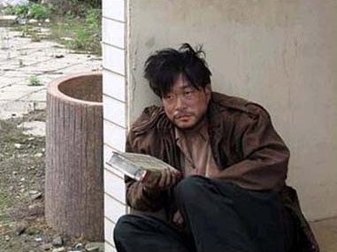
6시 비행기였는데 공항리무진이 없어서 전날 10시부터 노숙을 했다.
우선 비행기는 인당 29만원으로 저렴한 가격이었다. 50만원부터 시작이었는데 코로나 때문에 항공권이
줄줄이 취소되더니 30만원대 까지 떨어진 것이다.
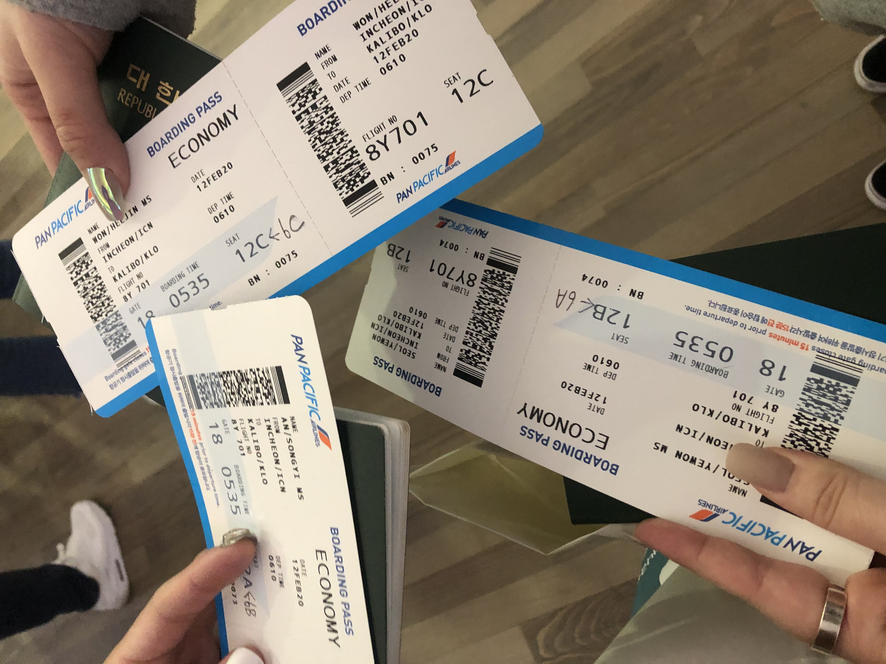
펜퍼시픽항공-292,900
한국에서 필리핀까지 도착하는데 걸리는 시간은 4시간30분!
칼리보 공항에 도착 후, 밖으로 나가니 픽업샌딩 업체에서 우리를 기다리고 있었다.
꿀팁1빠밤 픽업샌딩 업체를 사용해라!
픽업샌딩 업체를 사용하지 않으면 보라카이섬까지 가는게 매우 힘들다.
한화로 약 6만원정도로 공항-선착장-보라카이-숙소 까지 안내해주니 꼭 이용하길 바란다!
이용업체-다가보라
픽업샌딩-57,500
첫째날
숙소에 도착해서 체크인 후 준비하고 나오니 3시 언저리!
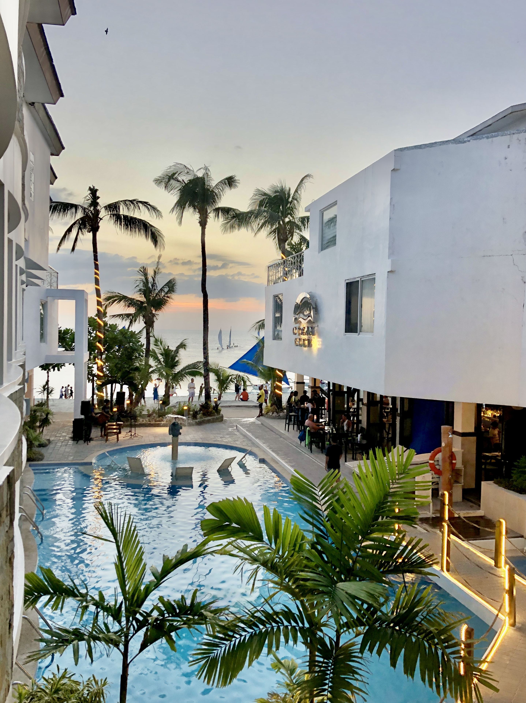
숙소정보-오션클럽
숙소-105,000
"우리 뭐하지? 환전부터 하자!" '엥? 환전 안했어?' 한다면
꿀팁2 빠밤 달러환전은 한국에서, 필리핀 단위(페소)는 현지에서!
페소 환전을 공항에서 할 경우 수수료가 어마어마하게 떼인다.
현지에서 환전할 때는 큰 단위를 많이 쳐주기 때문에 한국에서 환전 할 때 100달러 단위로 바꾸자:)
페소 단위는 1.5.10.20.50.100.300.1000페소이며 100페소 기준 한화 약 2300원 이다.
달러환전-20만원 (166$)
페소환전-160$ (약 8,000페소)
첫째날 저녁 우리는 보라카이에 가면 필수코스인 선셋세일링을 했다.
꿀팁3 빠밤 무조건 깎아라.
보라카이에서 할 수 있는 액티비티는 한국에서 다 예약하고 할 수 있지만 정말 비.싸.다.
길거리에서 현지인들이 액티비티를 권유하기 때문에 현지에서 흥정하는것이 좋다. 얼마나 비싸겠냐고
묻는다면 정말 바가지를 엄청 씌우기 때문에 무조건 깎아라.
선셋세일링 흥정 전 가격은 300페소. 우리는 150페소에 딜했다! 절반이나 깎은 가격이다!
작은 돛단배에 타고 노을이 지는 하늘을 보면서 바다에 발 담글 수 있다.
보라카이에 가면 이 액티비티 필수!!
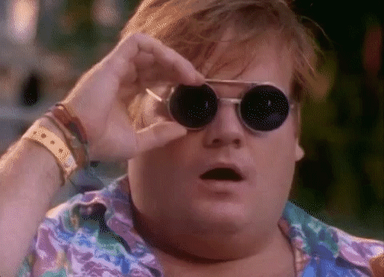
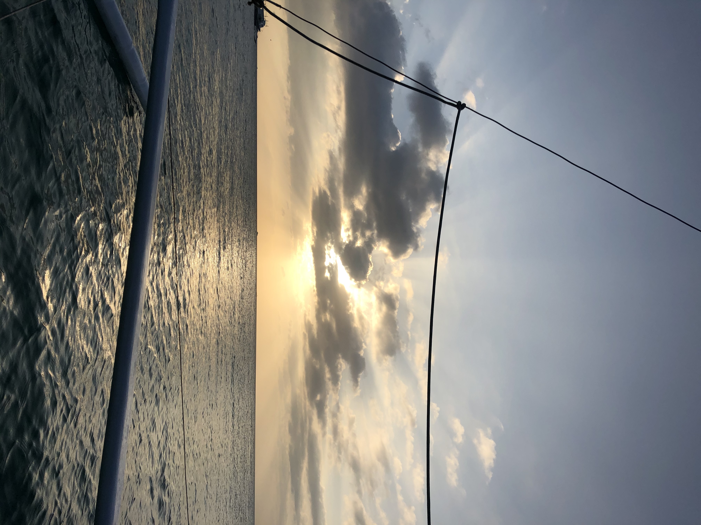
보십시오..이 아름다운 광경..말잇못..
액티비티1-150페소 (한화 약 4,000)
선셋세일링을 하고 나니 6시쯤 되었다. 생각해보니 보라카이 와서 아무것도 못 먹었는데..밥 먹어야지?
우리는 한국인들에게 유명한 맛집을 찾아갔다. 족발 통 튀김과 갈릭라이스가 유명한 집이었다.
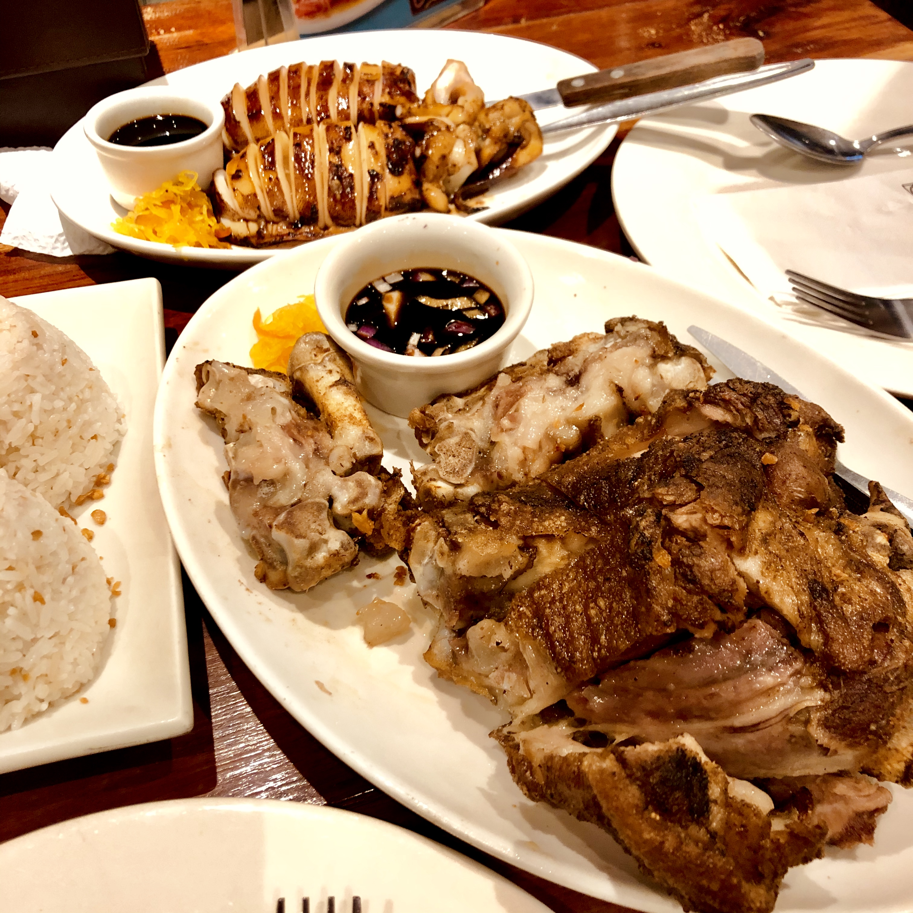
생각보다 보라카이 음식 굉장히 맛있다.
음식값은 총 1,300페소 정도로 비싸지도 싸지도 않고 적당히 잘 먹은 것 같다.
식당정보-게리스그릴
식사1-1인기준 430페소 (한화 약 1만원)
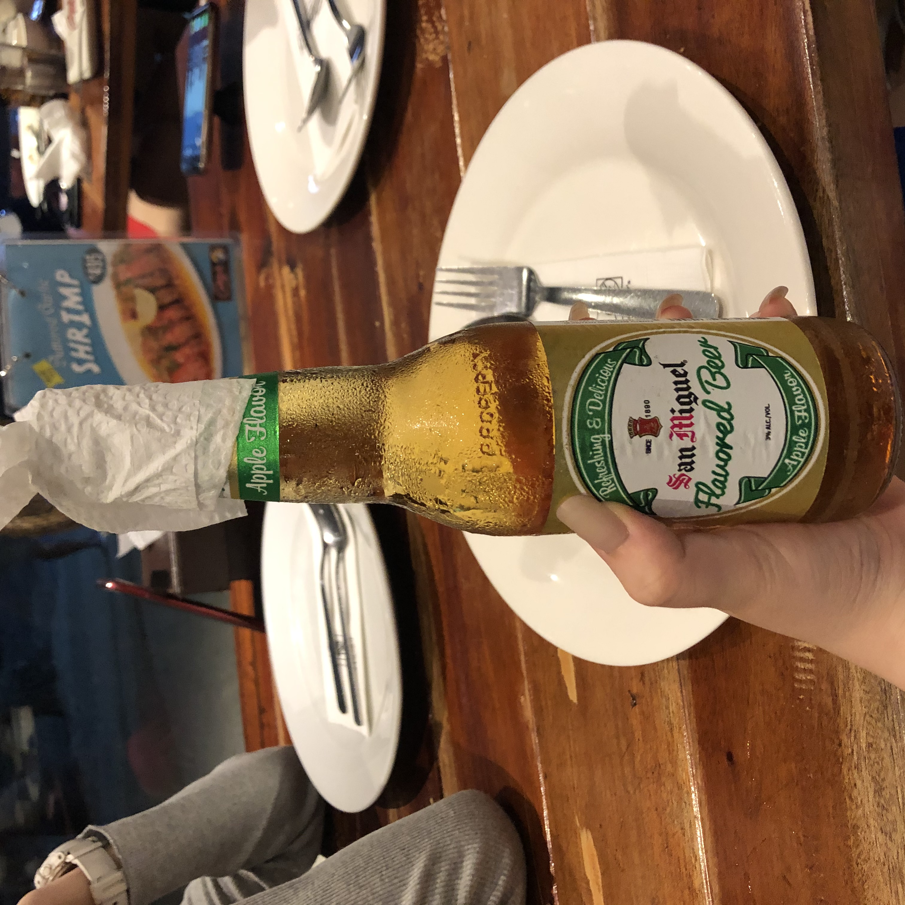
무엇보다 한국에서는 팔지않는 산미구엘 애플맛 맥주..!!
나와 친구들은 한국에 돌아와서도 이 맥주생각에 미쳐버리겠다..다들 보라카이에 간다면 무조건 이 맥주를 물처럼 드세요. 묻지말고 백번 드세요. 무조건 마셔.
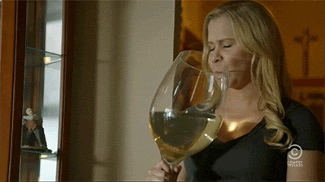
우리는 배를 채우고 보라카이에서 유명한 술집을 갔다.
꿀팁4 빠밤 술집 고르기!
술집추천-한국노래가 듣고싶다면? SUMMER PLACE.
외국힙합/팝송이 좋다면? EPIC.
이디엠이 좋다면? OM.

술-평균가격 칵테일 1잔 150~200페소 (한화 약 4,000~5,000)
둘째날
다음날 아침을 먹고 보라카이 본격적으로 즐기기 시작! 우리는 둘째날 작정하고 물에 들어가기로 했다.
그래서 우리가 선택한것은 바로 프리다이빙!
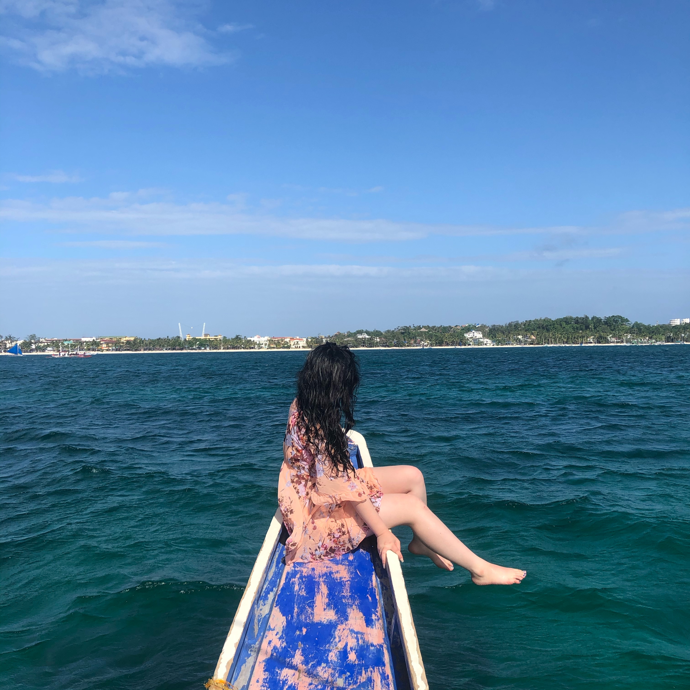
꿀팁5 빠밤 프리다이빙을 즐겨라!
보라카이에는 프리다이빙을 즐길 수 있는 업체들이 몇개 있지만, 그 중 공식적으로 세계다이버협회에 소속되어 전문가가 알려주는 곳은 딱 한 곳 뿐이다. 심지어 한국분이시기 때문에 매우 편하다.
가격대는 1인 7만원으로 한국에서 예약 후 활동이 가능하니 유의하길 바란다. 활동은 약 4시간으로 현지인들과 다이버 선생님이 잘 알려주신다.
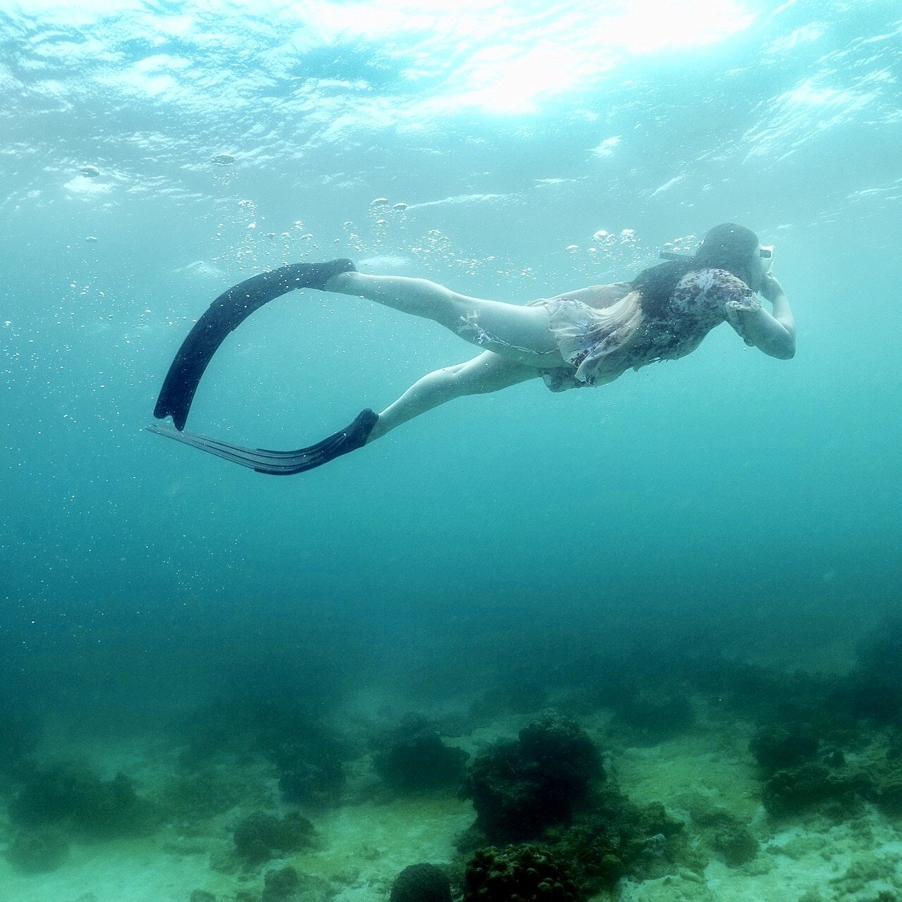
덕분에 인생샷도 찍었다!!!
이용업체-프다호핑
액티비티2-6,6000
프리다이빙을 하고나니 하루의 절반이 지나갔다. 5시가 되고 우리는 바로 다음 활동을 했다.
보라카이에 가면 해야할 필수활동 3번째! 페러세일링!!
꿀팁6 빠밤 페러세일링을 무조건 깎아서 즐겨라!
페러세일링을 하면 스피드보트까지 함께 패키지로 해주기 때문에 말도안되는 가격을 부른다.
우리는 처음에 3명기준 9,000페소를 달라고 했다. 9000페소면 얼마야..1인기준 7만원..?
어이가 없었지만 침착하게 흥정을 시작했다. 결과는 뚜둥..3명이서 5,500페소까지 흥정했다. 흥정 필수다..
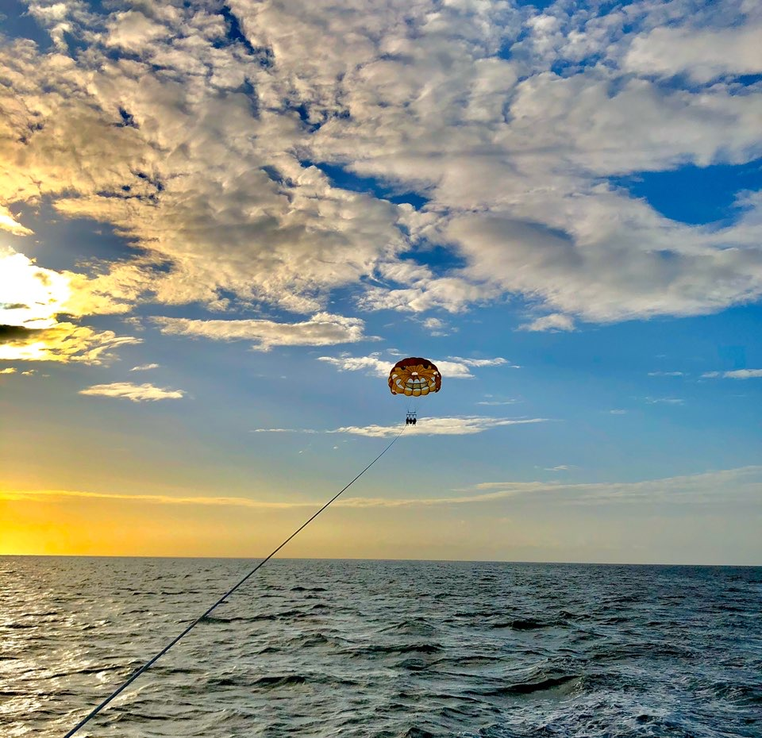
페러세일링을 하면 현지인이 카메라로 사진을 귀엽게 찍어준다. 활동 시간은 30분!
개인적으로 페러세일링 액티비티가 가장 만족스러운 활동이었다.
액티비티3-1인기준 1,800페소 (한화 약 4만원)
하루종일 물놀이를 하니 굉장히 허기지더라. 섬나라에 갔는데 해산물을 안먹으면 되겠나?
꿀팁7 빠밤 수산시장보단 맛집을 찾아라!
보라카이 디몰에는 수산물시장이 몰려있는데, 수산물 단가부터 조리비,팁까지 챙기면 2인기준 10만원이
넘는 돈이 나온다. 차라리 관광객들이 찾아가는 맛집을 찾아 해산물을 먹는것이 좋다.
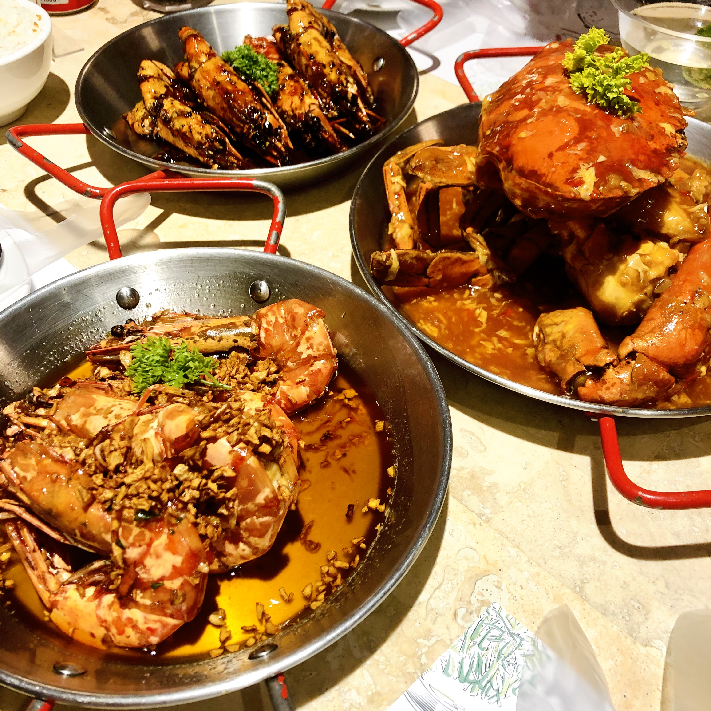
우리가 간 곳은 한국인들에게 소문난 게 맛집으로, 게를 직접 고른 후 무게에 따라 가격이 달라진다.
이 가게의 추천메뉴는 블랙페퍼 쉬림프와 갈릭버터 쉬림프이다. 태어나서 이렇게 맛있는 새우는 처음이다.
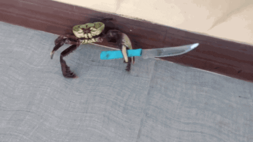
식당정보-레드크랩
식사2-3인기준 2,140페소 (한화 약 5만원)
셋째날
이날은 너무 아쉽게도 보라카이의 마지막 날이자 한국으로 돌아와야 하는 날이었다.
이 날은 여유롭게 해변가를 걷고, 간식 먹고, 호캉스했다. 보라카이의 바다는 우리나라에선 볼 수 없는 정말 아름다운 에메랄드빛 색이다. 너무 아름다웠다.
필리핀에 가면 장거리 이동시 필요한 교통수단! 바로 트라이씨클! 트라이씨클은 한국의 택시라고 생각하면 된다. 가격은 멀리가더라도 100페소이다. 장거리 이동시 팁 두둑히 챙겨주는 건 매너!
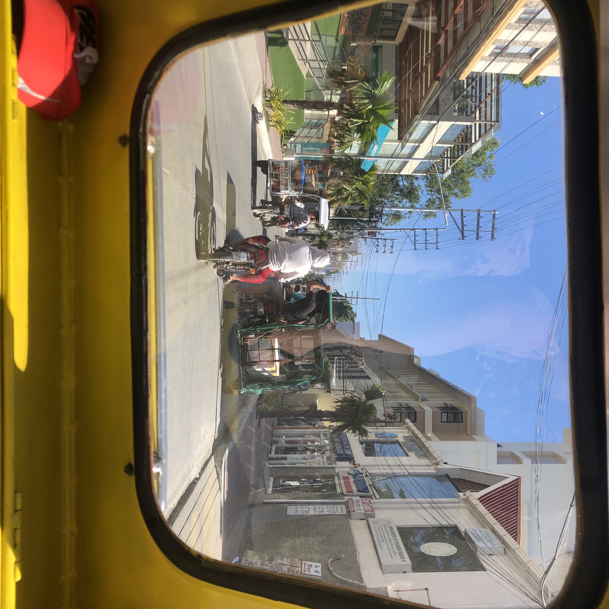
교통-100페소 (한화 2,300)
꿀팁8 빠밤 공항세
필리핀에서 한국으로 돌아올 땐 공항세를 받는다. 여기서 중요한 점은 달러도 안되고 무조건 페소단위로
받기 때문에 여행에 미쳐서 돈 다쓰면 비행기 못탄다!!!!!!!
공항세는 약 800페소인데 갈수록 공항세가 오르는 중이라 때에 따라 그 가격에 딱 맞춰 준비하는게 좋다.
필리핀은 팁문화가 강하기 때문에 만약 공항세가 784페소인데 800페소를 내면 절대 안돌려준다.
공항세-784페소 (한화 약 1,3000원)
꿀팁9 빠밤 건기/우기 확인 필수
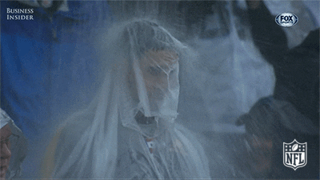
보라카이는 필리핀에 있는 섬이기 땜누에 1년 내내 여름이라고 보면된다. 필리핀 여행 적정기는 10월말~4월 초이다. 5월~9월까지느 우기이기 때문에 3일중 이틀꼴로 비가 온다고한다.
총정리
경비-30만원
숙소비-10만원
환전비-20만원
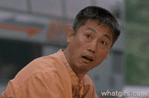
그렇게 싸게!?!?!?
장담한다. 사람마다 다르겠지만 나는 여행가서 아끼지 않았다. 먹고싶은거 다먹고, 하고싶은거 다하고,
사고싶은거 다샀다. 물론 짧은 기간 여행이라 돈이 많이 안들었을 수 있겠지만 4박~5박 여행을 계획한다면 +10~20만원만 더 챙긴다면 정말 야무지고 알차게 놀다 올 수 있다!
다들 첫 해외여행을 망치면 해외여행 가기 싫어진다는데 나는 여운이 남을 정도로 너무 즐겁게 다녀왔다. 내년에 꼭 다시 갈거다.
다들 보라카이 여행을 계획하고 있다면 이 글을 통해 야무지고 알찬 여행을 다녀오길 바란다!